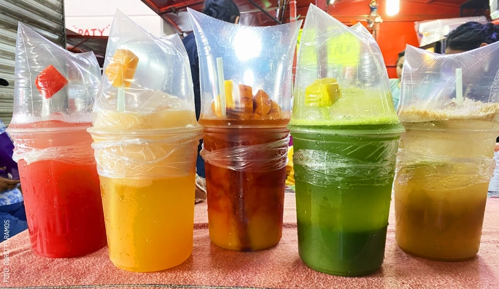
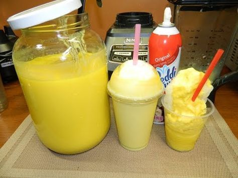

Nuestro Menú
Explora nuestra variedad de sabores. ¡Todos preparados al momento!
Machacados Tradicionales
Fruta machacada a mano con hielo, sal, limón y chile. ¡La combinación perfecta!

Raspados Refrescantes
Hielo raspado suave bañado en nuestros jarabes 100% caseros.

Especialidades Dulces
Para los amantes de lo cremoso. Usamos crema de rancho.